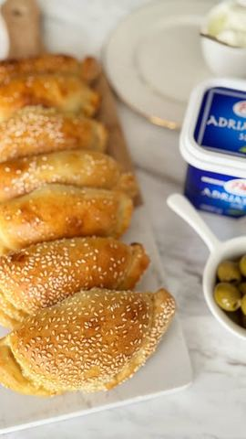

Susam feta pancerote iz rerne

Moja beleška
SačuvanoKad je u @lidlsrbija akcija Cene idu dole, meni ne manjka inspiracije za ukusne recepte! Ovog puta spremila sam mekane i mirisne susam feta pancerote, savršene za svaki obrok – doručak, užinu ili večeru. Bez prženja u ulju, iz rerne, a ukus je božanstven! 😍
Sastojci
- Za testo
- Za nadev
- Za premazivanje
Priprema
1. Testo: U toplu mešavinu mleka i vode dodajte šećer, kvasac i kašičicu brašna. Ostavite 10 minuta da kvasac nadođe. 2. Dodajte ulje, brašno i so, pa umesite glatko testo. Prekrijte providnom folijom i ostavite da odmara 20 minuta. 3. Malo premesite: Testo će biti prilično mekano i lepljivo. Pospite ga s malo brašna i premesite kratko, samo koliko je potrebno da bude lakše za rad. 4. Susam podloga: Na radnu površinu pospite 50 g susama. Razvucite testo preko susama tako da ga testo upije. 5. Nadev: Pomešajte Adriatikos feta sir, kiselu pavlaku, jaje i origano. 6. Testo razvucite oklagijom i vadite krugove željene veličine. Na sredinu svakog kruga stavite kašiku nadeva, preklopite i pritisnite ivice viljuškom da nadev ne iscuri. 7. Pancerote poređajte u pleh, ostavite ih da odstoje još 20 minuta, premažite umućenim jajetom. 8. Pecite u zagrejanoj rerni na 220°C oko 18-20 minuta, dok ne porumene. Mirisne, sočne i jednostavne za pripremu – ove pancerote sigurno će vas oduševiti! 🥰 Koji je vaš omiljeni trenutak za njih – doručak ili večera? Pišite mi! 🤗
Originalni opis sa Instagrama
Susam feta pancerote iz rerne 🥟😋 Kad je u @lidlsrbija akcija Cene idu dole, meni ne manjka inspiracije za ukusne recepte! Ovog puta spremila sam mekane i mirisne susam feta pancerote, savršene za svaki obrok – doručak, užinu ili večeru. Bez prženja u ulju, iz rerne, a ukus je božanstven! 😍 Za testo: • 200 ml toplog mleka • 200 ml tople vode • 100 ml ulja • 1 kesica suvog kvasca • 1 kašika šećera • 2-3 kašičice soli • 550 g brašna • 50 g susama Za nadev: • 200 g Adriatikos feta sira • 2 pune kašike kisele pavlake • 1 jaje • ½ kašičice origana Za premazivanje: • 1 jaje Priprema: 1. Testo: U toplu mešavinu mleka i vode dodajte šećer, kvasac i kašičicu brašna. Ostavite 10 minuta da kvasac nadođe. 2. Dodajte ulje, brašno i so, pa umesite glatko testo. Prekrijte providnom folijom i ostavite da odmara 20 minuta. 3. Malo premesite: Testo će biti prilično mekano i lepljivo. Pospite ga s malo brašna i premesite kratko, samo koliko je potrebno da bude lakše za rad. 4. Susam podloga: Na radnu površinu pospite 50 g susama. Razvucite testo preko susama tako da ga testo upije. 5. Nadev: Pomešajte Adriatikos feta sir, kiselu pavlaku, jaje i origano. 6. Testo razvucite oklagijom i vadite krugove željene veličine. Na sredinu svakog kruga stavite kašiku nadeva, preklopite i pritisnite ivice viljuškom da nadev ne iscuri. 7. Pancerote poređajte u pleh, ostavite ih da odstoje još 20 minuta, premažite umućenim jajetom. 8. Pecite u zagrejanoj rerni na 220°C oko 18-20 minuta, dok ne porumene. Mirisne, sočne i jednostavne za pripremu – ove pancerote sigurno će vas oduševiti! 🥰 Koji je vaš omiljeni trenutak za njih – doručak ili večera? Pišite mi! 🤗 • • • #susamfeta #panceroteizrerne #lidlsrbija #idejezaveceru #ukusnapeciva #proverenirecepti